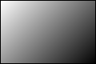
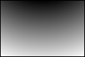

- java.lang.Object
-
- com.projetloki.genesis.image.Gradients
-
-
Method Summary
Methods Modifier and Type Method and Description static Gradientcircular(double xRatio, double yRatio)Returns a circular gradient.static Gradientlinear(Direction dir)Returns a linear gradient with the specified direction.static Gradientlinear(double theta)Returns a linear gradient with the specified direction, specified as an angle from the vector (1, 0).
-
-
-
Method Detail
-
linear
public static Gradient linear(Direction dir)
Returns a linear gradient with the specified direction.
Gradients.linear(Direction.RIGHT)- Parameters:
dir- the direction of the gradient- See Also:
linear(double), http://en.wikipedia.org/wiki/Color_gradient#Linear_gradients
-
linear
public static Gradient linear(double theta)
Returns a linear gradient with the specified direction, specified as an angle from the vector (1, 0). Positive angles are measured clockwise, and negative angles are measured anticlockwise. Gradients.linear(Math.PI / 4)- Parameters:
theta- in radians- See Also:
- http://en.wikipedia.org/wiki/Color_gradient#Linear_gradients
-
circular
public static Gradient circular(double xRatio, double yRatio)
Returns a circular gradient. Colors are calculated by linear interpolation based on distance from the focus. The coordinates of the focus are expressed as a ratio of the width/height of the image. Gradients.circular(0.5, -1)- Parameters:
xRatio- the number to multiply by the width of the image to obtain the x-coordinate of the focus. Does not have to be between 0 and 1.yRatio- the number to multiply by the height of the image to obtain the y-coordinate of the focus. Does not have to be between 0 and 1.- See Also:
- http://en.wikipedia.org/wiki/Color_gradient#Circular_gradients
-
-